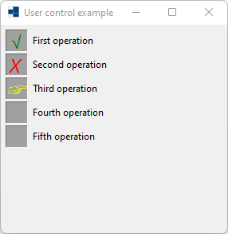
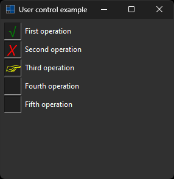
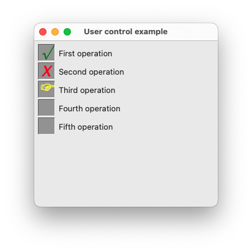
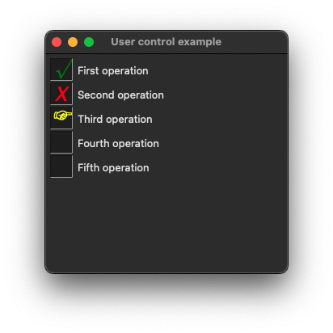
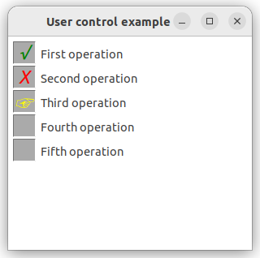
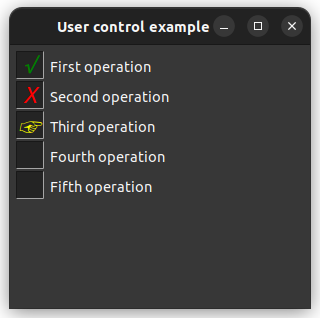

|
xtd
0.2.0
|
Loading...
Searching...
No Matches
user_control.cpp
demonstrates the use of xtd::forms::user_control control.
- Windows
- 

- macOS
- 

- Gnome
- 

#include <xtd/xtd>
namespace user_control_example {
enum class operation_status {
none,
running,
succeed,
failed
};
class operation : public user_control {
public:
operation() = default;
operation_status status() const {return status_;}
void status(operation_status status) {
if (status_ != status) {
status_ = status;
invalidate();
}
}
protected:
void on_paint(paint_event_args& e) override {
user_control::on_paint(e);
auto status_rectangle = rectangle {1, 1, 28, 28};
e.graphics().fill_rectangle(solid_brush {color_converter::dark(back_color())}, status_rectangle);
auto status_string = dictionary<operation_status, string> {{operation_status::none, u8""}, {operation_status::running, u8"☞"}, {operation_status::succeed, u8"√"}, {operation_status::failed, u8"X"}} [status()];
auto status_brush = solid_brush(std::map<operation_status, color> {{operation_status::none, fore_color()}, {operation_status::running, color::yellow}, {operation_status::succeed, color::green}, {operation_status::failed, color::red}} [status()]);
e.graphics().draw_string(status_string, drawing::font {default_font(), 18, font_style::italic}, status_brush, status_rectangle, string_format().alignment(string_alignment::center).line_alignment(string_alignment::center));
e.graphics().draw_line(pen(color_converter::dark(color_converter::dark(back_color()))), status_rectangle.location(), point {status_rectangle.width, 1});
e.graphics().draw_line(pen(color_converter::dark(color_converter::dark(back_color()))), status_rectangle.location(), point {1, status_rectangle.height});
e.graphics().draw_line(pen(color_converter::light(color_converter::light(back_color()))), point {1, status_rectangle.height}, point {status_rectangle.width, status_rectangle.height});
e.graphics().draw_line(pen(color_converter::light(color_converter::light(back_color()))), point {status_rectangle.width, 1}, point {status_rectangle.width, status_rectangle.height});
e.graphics().draw_string(text(), default_font(), system_brushes::control_text(), 35, e.graphics().measure_string(text(), default_font()).height / 2);
}
drawing::size default_size() const noexcept override {return {160, 30};}
private:
operation_status status_ = operation_status::none;
};
class form1 : public form {
public:
form1() {
text("User control example");
operations[0].parent(*this);
operations[0].status(operation_status::succeed);
operations[0].text("First operation");
operations[0].location({5, 5});
operations[0].click += event_handler {*this, &form1::on_operation_click};
operations[1].parent(*this);
operations[1].status(operation_status::failed);
operations[1].text("Second operation");
operations[1].location({5, 35});
operations[1].click += event_handler {*this, &form1::on_operation_click};
operations[2].parent(*this);
operations[2].status(operation_status::running);
operations[2].text("Third operation");
operations[2].location({5, 65});
operations[2].click += event_handler {*this, &form1::on_operation_click};
operations[3].parent(*this);
operations[3].status(operation_status::none);
operations[3].text("Fourth operation");
operations[3].location({5, 95});
operations[3].click += event_handler {*this, &form1::on_operation_click};
operations[4].parent(*this);
operations[4].status(operation_status::none);
operations[4].text("Fifth operation");
operations[4].location({5, 125});
operations[4].click += event_handler {*this, &form1::on_operation_click};
}
private:
void on_operation_click(object& sender, const event_args& e) {
user_control_example::operation& operation = as<user_control_example::operation&>(sender);
switch (operation.status()) {
case operation_status::none: operation.status(operation_status::running); break;
case operation_status::running: operation.status(operation_status::succeed); break;
case operation_status::succeed: operation.status(operation_status::failed); break;
case operation_status::failed: operation.status(operation_status::none); break;
}
}
list<operation> operations {5};
};
}
auto main() -> int {
application::run(user_control_example::form1 {});
}
Generated on Thu Nov 20 2025 22:53:23 for xtd by Gammasoft. All rights reserved.